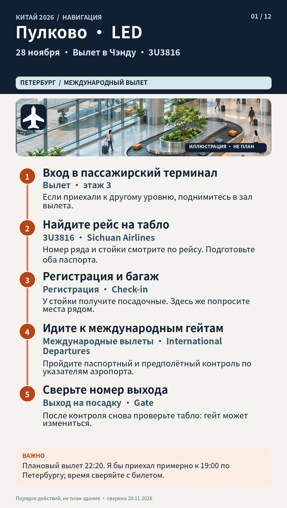
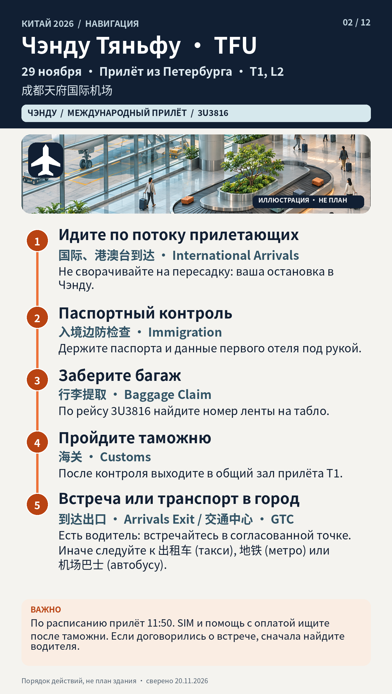
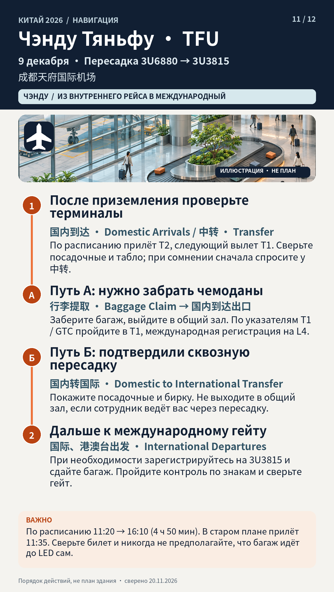
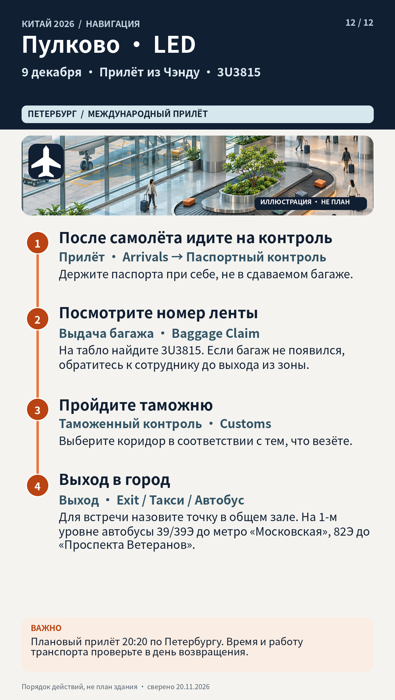
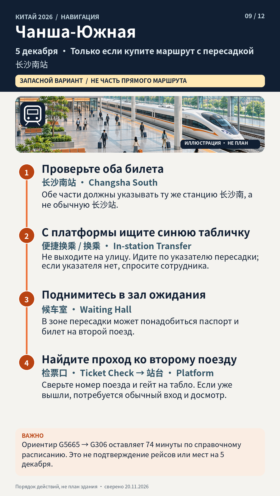

Китай 2026: аэропорты и вокзалы
Сохраните папку целиком. В ZIP эта страница и 12 PNG работают без интернета. PDF скачивается отдельно с обзора путешествия.
Это схемы порядка действий с иллюстрациями, а не точные планы зданий. Номера выходов, платформы, терминалы и время сверяйте с выписанным билетом, табло и сотрудниками. Указанное на картинках расписание — план, а не подтверждение рейса или поезда.
28 ноября · Пулково: международный вылет
Последовательность регистрации, сдачи багажа и выхода к международному рейсу из Пулково.


Это схемы порядка действий с иллюстрациями, а не точные планы зданий. Номера выходов, платформы, терминалы и время сверяйте с выписанным билетом, табло и сотрудниками. Указанное на картинках расписание — план, а не подтверждение рейса или поезда.
29 ноября · Тяньфу: прилёт в Чэнду
Паспортный контроль, багаж, таможня, встреча с водителем и покупка SIM после таможни. Если водитель ждёт с табличкой, сначала найдите его и согласуйте покупку SIM; точный выход встречи ещё нужно подтвердить.


Это схемы порядка действий с иллюстрациями, а не точные планы зданий. Номера выходов, платформы, терминалы и время сверяйте с выписанным билетом, табло и сотрудниками. Указанное на картинках расписание — план, а не подтверждение рейса или поезда.
1 декабря · Чэнду-Восточный: посадка
Вход на вокзал Chengdu East, проверка паспорта, досмотр и выход на платформу после объявления.

Это схемы порядка действий с иллюстрациями, а не точные планы зданий. Номера выходов, платформы, терминалы и время сверяйте с выписанным билетом, табло и сотрудниками. Указанное на картинках расписание — план, а не подтверждение рейса или поезда.
1 декабря · Чжанцзяцзе-Западный: прибытие
Выход с платформы Zhangjiajie West и поиск согласованной зоны посадки в такси.

Это схемы порядка действий с иллюстрациями, а не точные планы зданий. Номера выходов, платформы, терминалы и время сверяйте с выписанным билетом, табло и сотрудниками. Указанное на картинках расписание — план, а не подтверждение рейса или поезда.
4 декабря · Чжанцзяцзе-Западный: посадка
Вход и досмотр на Zhangjiajie West перед поездом во Фуронг.

Это схемы порядка действий с иллюстрациями, а не точные планы зданий. Номера выходов, платформы, терминалы и время сверяйте с выписанным билетом, табло и сотрудниками. Указанное на картинках расписание — план, а не подтверждение рейса или поезда.
4 декабря · Фуронг: выход к транспорту
Выход с вокзала Furongzhen к согласованному трансферу, такси или автобусу.

Это схемы порядка действий с иллюстрациями, а не точные планы зданий. Номера выходов, платформы, терминалы и время сверяйте с выписанным билетом, табло и сотрудниками. Указанное на картинках расписание — план, а не подтверждение рейса или поезда.
5 декабря · Фуронг: ранняя посадка
Ранний выезд, проверка паспорта и досмотр перед поездом из Furongzhen.

Это схемы порядка действий с иллюстрациями, а не точные планы зданий. Номера выходов, платформы, терминалы и время сверяйте с выписанным билетом, табло и сотрудниками. Указанное на картинках расписание — план, а не подтверждение рейса или поезда.
5 декабря · Пекин-Западный: прибытие
Выход с Beijing West к метро или согласованной зоне посадки в такси.

Это схемы порядка действий с иллюстрациями, а не точные планы зданий. Номера выходов, платформы, терминалы и время сверяйте с выписанным билетом, табло и сотрудниками. Указанное на картинках расписание — план, а не подтверждение рейса или поезда.
9 декабря · PEK, терминал 2: вылет в Чэнду
Внутренний вылет из PEK T2, регистрация и уточнение сквозной отправки багажа.

Это схемы порядка действий с иллюстрациями, а не точные планы зданий. Номера выходов, платформы, терминалы и время сверяйте с выписанным билетом, табло и сотрудниками. Указанное на картинках расписание — план, а не подтверждение рейса или поезда.
9 декабря · Тяньфу: пересадка домой, пути А и Б
Два варианта пересадки в Тяньфу: с получением багажа или со сквозной пересадкой после подтверждения сотрудником. Путь А — забрать чемоданы и зарегистрировать заново. Путь Б — идти на сквозную пересадку только после подтверждения сотрудником и проверки багажной бирки.


Это схемы порядка действий с иллюстрациями, а не точные планы зданий. Номера выходов, платформы, терминалы и время сверяйте с выписанным билетом, табло и сотрудниками. Указанное на картинках расписание — план, а не подтверждение рейса или поезда.
9 декабря · Пулково: международный прилёт
Паспортный контроль, получение багажа и таможня по прибытии в Пулково.


Это схемы порядка действий с иллюстрациями, а не точные планы зданий. Номера выходов, платформы, терминалы и время сверяйте с выписанным билетом, табло и сотрудниками. Указанное на картинках расписание — план, а не подтверждение рейса или поезда.
Только запасной вариант · пересадка в Чанша-Южная
В основной план входит прямой поезд. Эта схема нужна только при покупке другого маршрута с пересадкой в Чанша-Южная.


Это схемы порядка действий с иллюстрациями, а не точные планы зданий. Номера выходов, платформы, терминалы и время сверяйте с выписанным билетом, табло и сотрудниками. Указанное на картинках расписание — план, а не подтверждение рейса или поезда.